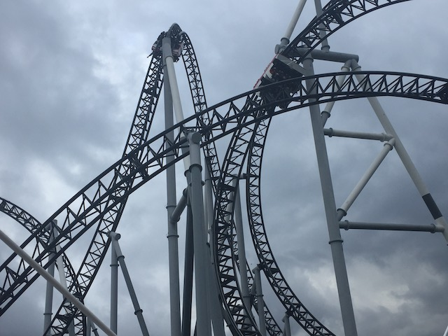
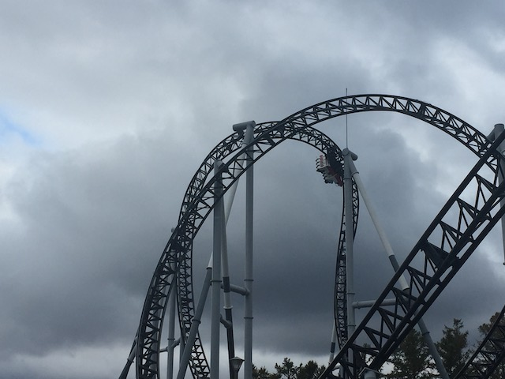
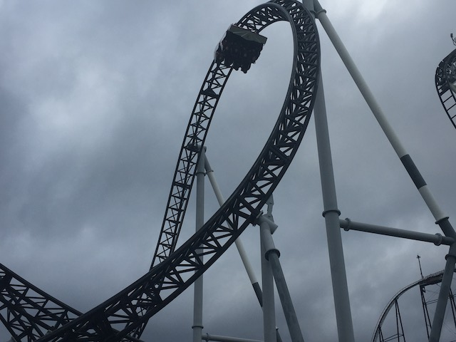
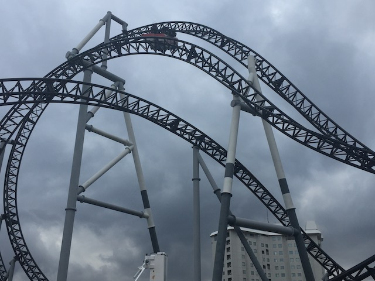
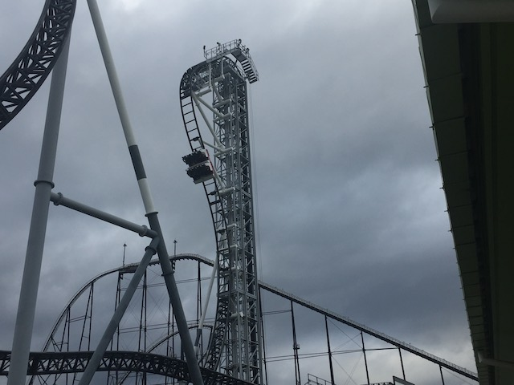

| |
Takabisha Review

For today's review, we are heading to Fuji-Q Highlands to review the parks Euro Fighter, Takabisha. Now, this is sort of a hybrid coaster. As this isn't really a true Euro Fighter. It's sort of half Euro Fighter, half Infinity Coaster. This basically means that the ride has a launch. But hey. Gerstlauter is calling this a Eurofighter, and it just got a clone (Hoping to ride it this summer. Don't ruin this for me Coronavirus!) in New Jersey. So yeah. It's clear that this thing is a Eurofighter. And it's a really good one. So yeah. Let's hop in the cars, pull down the OTSRs, and away we go! We turn and are now in the dark. So....we can't really see where we're going here. But yeah. We turn, and then....YAY!!! We drop. We go through some turns, through an inversion. Hard to tell what kind of inversion (an inline twist), but it's a lot of fun. We then go down a small dip, seeing the light at the end of the tunnel, and BAM!!!! We launch! Now we're really gaining some speed. OK. Fine. We're spoiled compared to Dododonpa. This is nothing. We then rise up into a giant corkscrew. Though, it doesn't feel like one. There's no whip or anything to it. It just sort of feels like a big giant inversion. Big, kind of floaty, and a lot of fun. We then head into what may be the most unique and intersting part of the ride. The Banana Roll. This is a very unique inversion (though its starting to grow in popularity). This is a sort of....It's kind of like if you fused a Cobra Roll into one single inversion. That, or an overbanked turn, except it's overbanked so much that it pretty much becomes an inversion. Or it's like a cutback, only you took that cutback in Adobe Photoshop, and then vertically stretched it dramaticly. Regardless of how you describe the Banana Roll, it's a very fun inversion. We then head into another corkscrew. Much like the first corkscrew we went through, this thing is massive, has no whip or snap to it at all, and is just another big floaty inversion for us to cruise through, getting a little bit of hangtime on the way. We head through another sort of wave hill. It's fun, but sadly, there are no laterals, and there's no airtime. Bummer. We head up a small hill and glide into the brake run. But this isn't the end. This is just Part 1 of the ride for us. Wave to Fujiyama BTW. We then head inside, turn around, come back outside, staring at the giant vertical lifthill. Oh yeah. I forgot this was a Eurofighter for a little bit. We then begin climbing up towards the sky. I'm not sure why, but I love vertical lifthills. We reach the top, and....yeah. This ride pulls a HangTime, where it goes down at a weird ramp, just to stop. Yeah, this thing is Gerstlauers attempt at ripping off the B&M Dive Machine. Here, it just feels awkward. Just wanna drop now. Hey, you get a great view of Takabisha's twisted layout from up here. Then we let go and head down the beyond vertical drop. Now I should note something. Takabisha and its clone have the steepest drop in the world at 121 degrees (The clone may claim to be half a degree steeper, but that's like one twin saying "We're not the same age! I came out first! So I'm 5 minutes older!". F*ck off with that record sh*t! I don't acknowledge it!). Honestly, this drop doesn't feel that much different from the other Eurofighters despite being a bit steeper. Still a lot of fun. We then twist up into we're upsidedown, and then drop back rightside up to the ground. Not too many Eurofighters have dive loops. We then enter what RCDB claims is an inverted top hat. But this doesn't feel at all like the ones on the Mr. Freeze clones. This feels more like another smaller Banana Roll. Or a giant cutback. Hey! I have no problem with that. We then drop out of that and go straight into....an Immelmann Loop. God damn it! This thing is nothing but inversions LOL! Just flip up, and twist out of it and to the ground. Speaking of nothing but inversions, we then rise up and hit the brake run! Making the ride literally nothing but inversions aside from its launch and 121 degree drop! But hey! I like it! This ride is freaking fun! Yeah, it may be overshadowed by all the other great coasters at Fuji-Q and is my least favorite of the major 4 coasters at the park, but it's still a lot of fun! I mean, this is the 2nd best Eurofighter! Only being beaten out by Fluch von Novgorod, and that ride has freaking amazing theming! So it's understandable why that takes the win! But yeah! Definetly make sure to give this a ride if you're at Fuji-Q Highlands.
8/10
Location: Fuji-Q Highlands
Opened: 2011
Built by: Gerstlauer
Last Ridden: November 5, 2018
I have ridden this exact same ride at the following parks.
American Dream
Takabisha Photos





Home
|